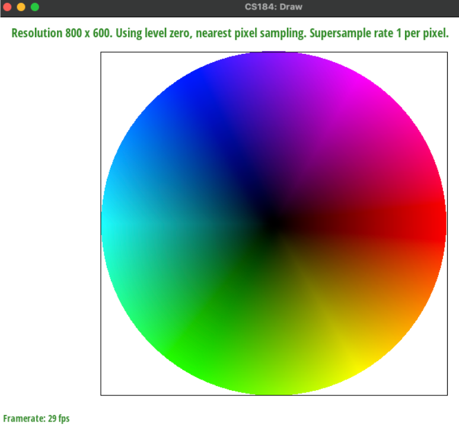

Walk through how you rasterize triangles in your own words. First, we found the minimum and maximum x and y coordinates of all the triangle points. We then made sure they were in bounds. Also, we created a helper method to return the value of the point-in-line test. To check each pixel, we used a double for loop for each point in the bounding box, and did the point-in-triangle tests on them. We checked 2 sets of 3 point in line tests, to check for each winding direction. Explain how your algorithm is no worse than one that checks each sample within the bounding box of the triangle. The bounding box is determined by the min/max of the x and y coordinates, so we found those : p and only looped over the points in the box. Show a png screenshot of basic/test4.svg with the default viewing parameters and with the pixel inspector centered on an interesting part of the scene. Extra credit: Explain any special optimizations you did beyond simple bounding box triangle rasterization, with a timing comparison table (we suggest using the c++ clock() function around the svg.draw() command in DrawRend::redraw() to compare millisecond timings with your various optimizations off and on).

Walk through your supersampling algorithm and data structures. Why is supersampling useful? What modifications did you make to the rasterization pipeline in the process? Explain how you used supersampling to antialias your triangles. Show png screenshots of basic/test4.svg with the default viewing parameters and sample rates 1, 4, and 16 to compare them side-by-side. Position the pixel inspector over an area that showcases the effect dramatically; for example, a very skinny triangle corner. Explain why these results are observed. Extra credit: If you implemented alternative antialiasing methods, describe them and include comparison pictures demonstrating the difference between your method and grid-based supersampling.


Create an updated version of svg/transforms/robot.svg with cubeman doing something more interesting, like waving or running. Feel free to change his colors or proportions to suit your creativity. Save your svg file as my_robot.svg in your docs/ directory and show a png screenshot of your rendered drawing in your write-up. Explain what you were trying to do with cubeman in words.
Explain barycentric coordinates in your own words and use an image to aid you in your explanation. One idea is to use a svg file that plots a single triangle with one red, one green, and one blue vertex, which should produce a smoothly blended color triangle. Show a png screenshot of svg/basic/test7.svg with default viewing parameters and sample rate 1. If you make any additional images with color gradients, include them.
Explain pixel sampling in your own words and describe how you implemented it to perform texture mapping. Briefly discuss the two different pixel sampling methods, nearest and bilinear. Check out the svg files in the svg/texmap/ directory. Use the pixel inspector to find a good example of where bilinear sampling clearly defeats nearest sampling. Show and compare four png screenshots using nearest sampling at 1 sample per pixel, nearest sampling at 16 samples per pixel, bilinear sampling at 1 sample per pixel, and bilinear sampling at 16 samples per pixel. Comment on the relative differences. Discuss when there will be a large difference between the two methods and why.
Explain level sampling in your own words and describe how you implemented it for texture mapping. You can now adjust your sampling technique by selecting pixel sampling, level sampling, or the number of samples per pixel. Describe the tradeoffs between speed, memory usage, and antialiasing power between the three various techniques. Using a png file you find yourself, show us four versions of the image, using the combinations of L_ZERO and P_NEAREST, L_ZERO and P_LINEAR, L_NEAREST and P_NEAREST, as well as L_NEAREST and P_LINEAR. To use your own png, make a copy of one of the existing svg files in svg/texmap/ (or create your own modelled after one of the provided svg files). Then, near the top of the file, change the texture filename to point to your own png. From there, you can run ./draw and pass in that svg file to render it and then save a screenshot of your results. Note: Choose a png that showcases the different sampling effects well. You may also want to zoom in/out, use the pixel inspector, etc. to demonstrate the differences. Extra credit: If you implemented any extra filtering methods, describe them and show comparisons between your results with the other above methods.
Extra Credit Save your best svg file as competition.svg in your docs/ directory, and show us a 800x800 png screenshot of it in your write-up! Explain how you did it. If you wrote a script to generate procedural svg files, include it in your submission in the src/ directory and briefly explain how it works.